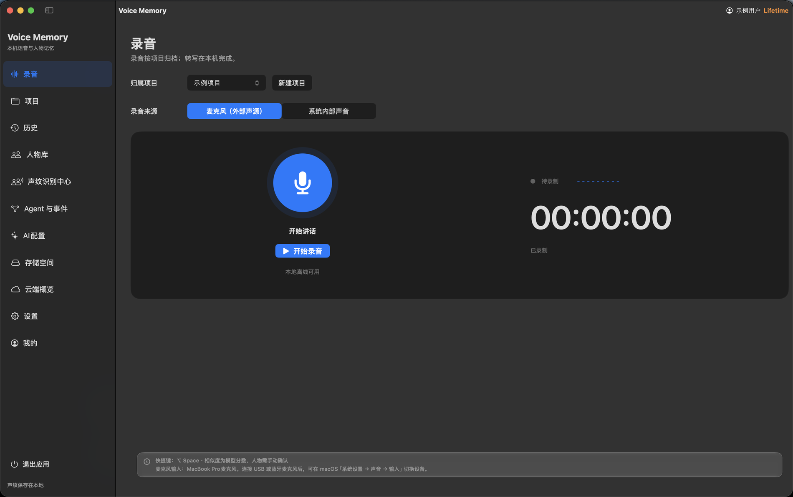
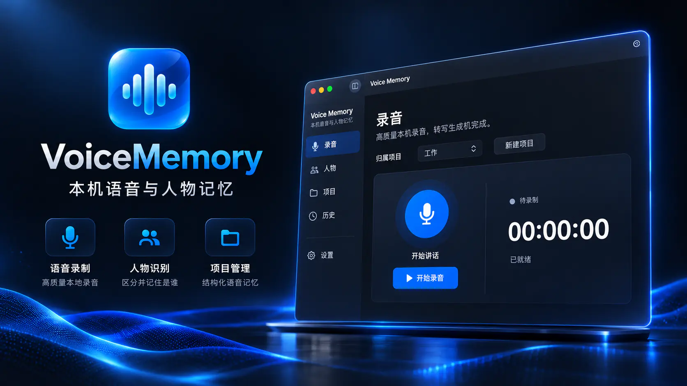
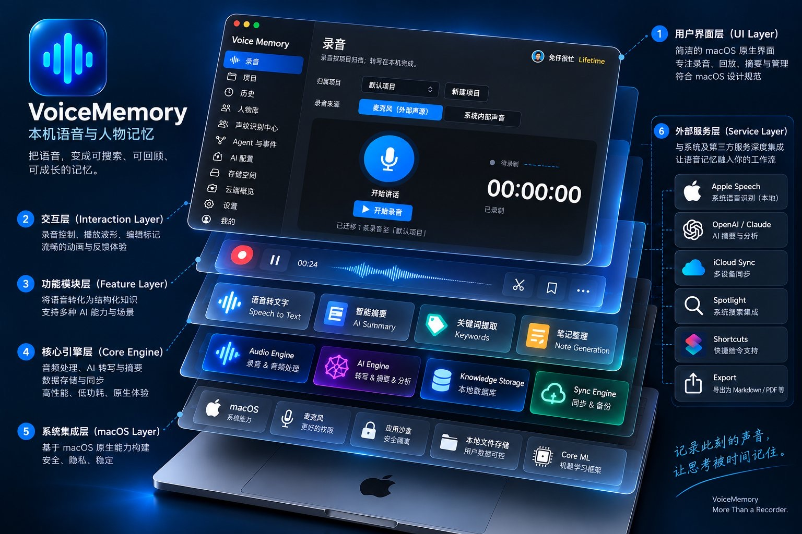

01 / CAPTURE先保留声音，
先保留声音，
再读出线索
录制麦克风或 Mac 内部声音，在本机完成转写和说话人分段；中英文自动识别，macOS 15 起还可在本机完成英文到中文的逐句翻译。时间点让文字能够回到原音频。
本机处理中英自动识别分段与时间点

真实 App 界面 未包含录音与项目数据
产品一览 / PRODUCT OVERVIEW
录音在本机完成，人物由你确认，项目把声音、转写和说明留在同一处。这张主视觉给出的就是产品全貌——界面为设计稿渲染，不是可操作的网页应用。

构建方式 / ARCHITECTURE
界面、交互、功能模块、核心引擎与系统集成各司其职，外部服务只在你主动选择时参与。下图说明各部分的分工，是结构示意，不是界面截图。

两个平台 / MAC 与 IPHONE
Mac 版与 iPhone 版使用同一个云端账号与同一份权益。录音与转写默认留在本机；可由你通过加密包迁移。iCloud 同步尚未开放；后续如提供并由你主动开启，部分结构化数据及已确认声纹向量可能跨设备传输。
示意画面 非真实界面截图
邮箱注册与登录，云端账号只承载身份与权益；项目与人物可通过加密包迁移。
录音与转写默认保存在本机；你可主动导出加密包。iCloud 同步尚未开放；后续如提供并由你主动开启，已确认声纹向量可能跨设备传输。
项目与人物通过密码加密包互传，录音包含音频与说话人标签；完整备份另含恢复密钥。
产品核心 / VOICEPRINT MEMORY
第一次听见，给出候选。
你确认或更正。
下一次，判断有了依据。
应用把每段语音与已确认的人物样本比较，同时保留不确定性。只有你确认的合格片段才会成为长期声纹样本；纠错会留下反馈，帮助后续匹配与阈值调整。
产品介绍动画 / HOW IT WORKS
滚动页面，跟随 Voice Memory 的核心流程。画面是产品机制的示意，不是可操作的网页应用。
录制麦克风或 Mac 内部声音，在本机完成转写和说话人分段；中英文自动识别，macOS 15 起还可在本机完成英文到中文的逐句翻译。时间点让文字能够回到原音频。

应用根据已有声纹提示可能的说话人。候选不会自动变成事实；你可以逐段确认、更正，或新建人物。
合格的确认片段进入加密声纹库。应用记录确认与纠错反馈，并在跨录音、跨日期的留出数据足够时验证阈值；证据不足就沿用现有设置。
进一步理解 / AI SUMMARY
需要时，按需生成结构化摘要：支持主流 AI 服务与自定义兼容服务，也可使用已有的 AI 订阅额度；摘要模板可以自定义。摘要可写回对应录音；Agent 提交的摘要草稿，会先在应用内审核、修改，再决定是否反写。
清晰的所有权 / ACCOUNT & PLANS
云端账号用于身份与权益：iPhone 版需要登录，Mac 版可不登录使用本机核心功能；登录本身不会上传录音或转写。本地能力对所有人完整开放，既有 Pro 权益继续保留，兑换码即可激活。
记忆有来处 / CONTEXT
按项目整理录音，搜索人物、标题或转写。Agent 可通过本地 MCP 检索线索，并提交外部音频导入、事件或摘要草稿；关键写入由你在 App 中审核。
音频、转写稿和说明保持对应。
候选与确认状态明确区分。
Agent 请求和草稿进入应用内审核。
你的声音，你的边界
核心录音、转写和声纹分析在设备上完成。已确认声纹以本机密钥加密保存；应用不含统计埋点、崩溃上报或广告追踪。
声纹候选不是身份事实。外部导入、事件和 Agent 摘要草稿经过应用内审核。
你主动生成摘要时，转写及已确认说话人信息会发送给所选服务。加密包分享和获授权的 Agent 读取也由你控制。
注册与登录会向账号服务提交邮箱、密码及应用生成的设备标识。登录本身不会上传录音或转写；iCloud 同步尚未开放；后续如提供并由你主动开启，部分结构化数据与已确认声纹向量可能跨设备传输。完整说明见隐私政策。
VOICE MEMORY · 测试版下载
Mac 版支持 macOS 14+ 的 Apple Silicon；iPhone 版支持 iOS 17+。两个安装包均为 2026 年 10 月 13 日测试版，请阅读下列安装限制。
iPhone 测试包需用 Apple Configurator 或 Xcode 安装到已登记设备；下载本身不代表设备获得安装资格。iCloud 同步与在线购买尚未开放。查看隐私政策（1.2） · 版本说明与校验值